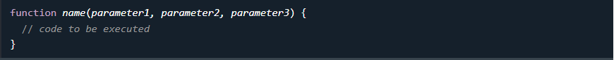

Uma função JavaScript é um bloco de código projetado para executar uma tarefa específica.
Uma função JavaScript é executada quando “algo” a invoca (chama).
Chamar uma função que efectua um cálculo e devolve o resultado:
Uma função JavaScript é definida com a functionpalavra-chave, seguida por um nome , seguido por parênteses () .
Os nomes das funções podem conter letras, dígitos, sublinhados e cifrões (mesmas regras das variáveis).
Os parênteses podem incluir nomes de parâmetros separados por vírgulas: ( parâmetro1, parâmetro2, ... )
O código a ser executado, pela função, é colocado entre chaves: {}
Os parâmetros da função são listados entre parênteses () na definição da função.
Argumentos de função são os valores recebidos pela função quando ela é invocada.
Dentro da função, os argumentos (os parâmetros) comportam-se como variáveis locais.
O código dentro da função será executado quando “algo” invocar (chamar) a função:
Quando o JavaScript atinge uma returninstrução, a função irá parar de ser executada.
Se a função foi invocada a partir de uma instrução, o JavaScript “retornará” para executar o código após a instrução invocada.
As funções geralmente calculam um valor de retorno . O valor de retorno é "devolvido" ao "chamador":
Chamar uma função que efectua um cálculo e devolve o resultado:
Com funções você pode reutilizar código
Você pode escrever código que pode ser usado muitas vezes.
Você pode usar o mesmo código com argumentos diferentes para produzir resultados diferentes.
O operador () invoca (chama) a função:
Convertendo Fahrenheit em Celsius:
Invoca (chama) uma função que converte de Fahrenheit para Celsius:
Acessar uma função com parâmetros incorretos pode retornar uma resposta incorreta:
Invoca (chama) uma função para converter de Fahrenheit para Celsius:
Acessar uma função sem () retorna a função e não o resultado da função:
O acesso a uma função sem () devolve a função e não o resultado da função:
Como você pode ver nos exemplos acima, toCelsius refere-se ao objeto de função e toCelsius() ao resultado da função.
As funções podem ser usadas da mesma forma que você usa variáveis, em todos os tipos de fórmulas, atribuições e cálculos.
Em vez de usar uma variável para armazenar o valor de retorno de uma função:
Você pode usar a função diretamente, como um valor variável:
Usando uma função como uma variável:
Variáveis declaradas em uma função JavaScript tornam-se LOCAIS para a função.
Variáveis locais só podem ser acessadas de dentro da função.
Fora de myFunction() carName é indefinido.
Como as variáveis locais só são reconhecidas dentro de suas funções, variáveis com o mesmo nome podem ser utilizadas em funções diferentes.
Variáveis locais são criadas quando uma função é iniciada e excluídas quando a função é concluída.